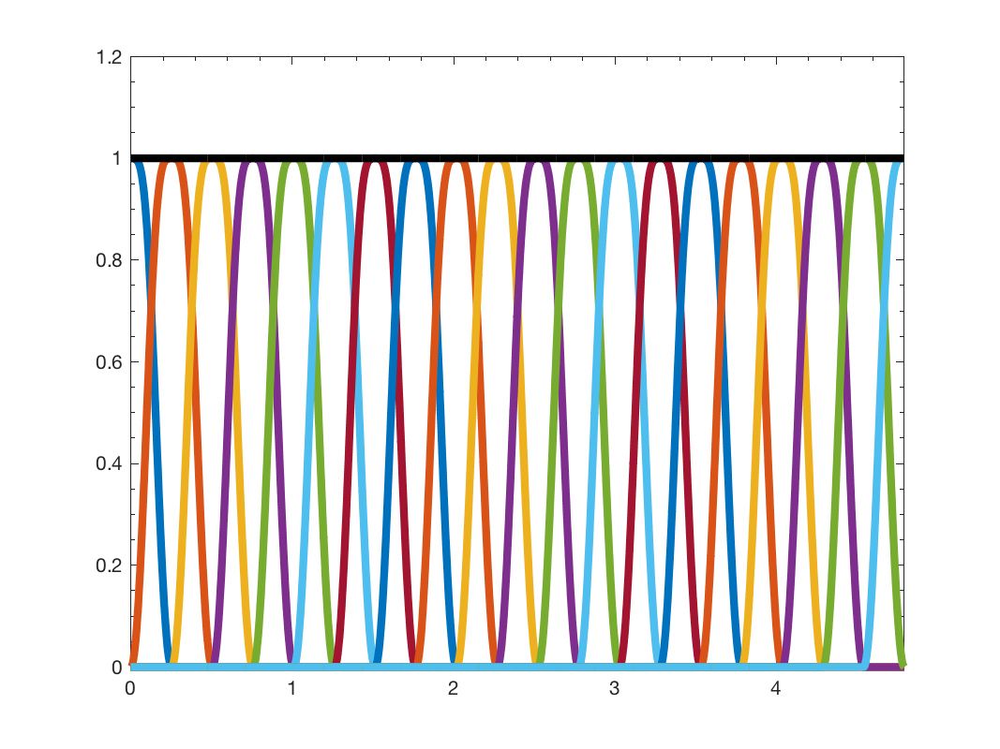

g = gsp_design_itersine( G, Nf ); g = gsp_design_itersine( G, Nf, param );
This function creates an itersine half overlap filterbank of Nf filters Going from \(0\) to \(\lambda_{max}\)
This filterbank is tight for an overlap of 2 and other particular values. The function normalizes the window such that the framebound is 1.
The itersine window between -0.5 and 0.5 is defined as
This function will compute the maximum eigenvalue of the laplacian. To be more efficient, you can precompute it using:
G = gsp_estimate_lmax(G);
Example:
Nf = 20; G = gsp_sensor(100); G = gsp_estimate_lmax(G); g = gsp_design_itersine(G, Nf); gsp_plot_filter(G,g); [A,B] = gsp_filterbank_bounds(G,g)
This code produces the following output:
A =
1.0000
B =
1.0000

param is an optional structure containing the following fields